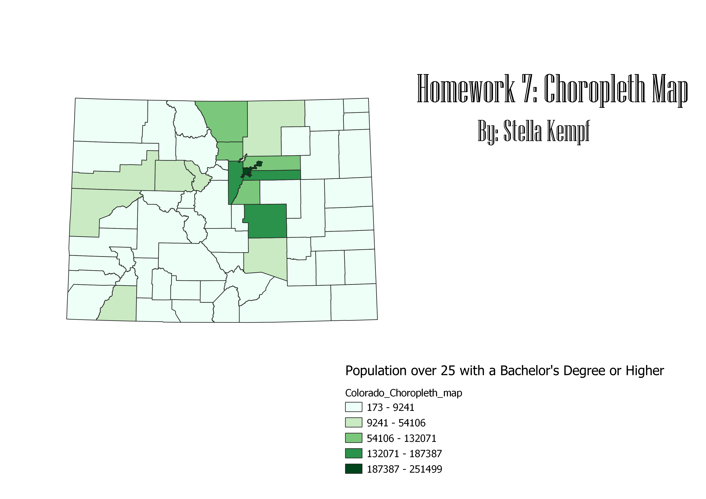

Homework 7: Census data choropleth
Stella Kempf
This map is a choropleth map that shows the number of people in each county of the state of Colorado
that has recieved a Bachelor's degree or higher. The lightest green color on the map represents counties
with the fewest number of people with a Bachelor's degree or higher, while the darkest color green represents
counties with the most number of people with a Bachelor's degree or higher. The dataset represents the
TOTAL number of people with a Bachelor's degree or higher, so the legend is in whole numbers instead of percentages.

Data used for this project
CSV dataset
Link to shapefile